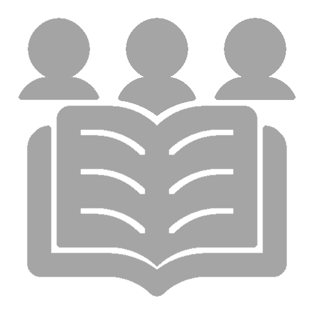
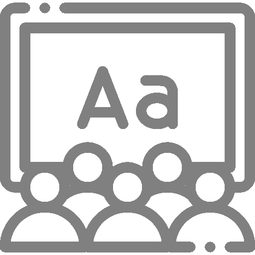
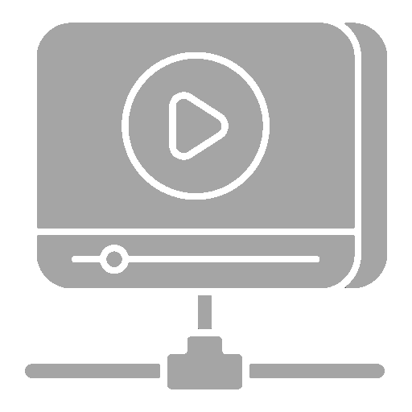
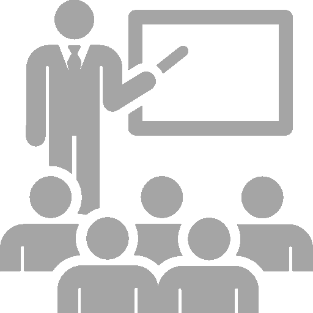

Índice de la página
Acerca de este diplomado A quién va dirigido Lo que aprenderás Contenido del curso Equipo de trabajo TestimoniosBienvenido al diplomado en Transformación Digital
Un programa educativo diseñado para llevarte en un emocionante viaje hacia el mundo de la transformación empresarial en la era digital. En un entorno en constante evolución, la capacidad de adaptación y la adopción de nuevas tecnologías se han convertido en imperativos para el éxito organizacional. Este diplomado está diseñado para equiparte con las habilidades, conocimientos y perspectivas necesarios para iniciar el camino de la transformación digital en tus empresas y carrera.

Ofrecido por
Laboratorio de Usabilidad - Universidad del Quindío
Duración
32 Horas
Modalidad
Virtual
Costo
Gratis
Certificado
Si¡Obtenga un certificado de finalización reconocido por la industria!
Como entidad formadora, valoramos profundamente tus logros y dedicación en tu camino de aprendizaje. Es por ello que brindamos un Certificado de Finalización a todos los estudiantes que culminan con éxito nuestros diplomados. Más info...

ACERCA DE ESTE DIPLOMADO
Únete a nuestro Diplomado en Transformación Digital y prepárate para liderar la revolución digital en el mundo empresarial. A lo largo de este programa, adquirirás los fundamentos de la transformación digital y de las tecnologías clave. Nuestro equipo de expertos ha diseñado un diplomado que te lleva progresivamente a lo largo de los contenidos de las diferentes unidades, mientras exploras cómo las organizaciones pueden prosperar en la era digital. Prepárate para adquirir las habilidades y el conocimiento necesarios para liderar con confianza en este emocionante nuevo paradigma empresarial.
¡Únete a nosotros y sé parte de la revolución digital que transformará tu visión en una realidad empresarial innovadora!
Inicio
15/01/2024

N° Estudiantes
150

Idioma
Español

Horas de video
10 Horas

N° de clases
38 clasesA QUIÉN VA DIRIGIDO
Únete a nuestro Diplomado en Transformación Digital y prepárate para liderar la revolución digital en el mundo empresarial. A lo largo de este programa, adquirirás los fundamentos de la transformación digital y de las tecnologías clave. Nuestro equipo de expertos ha diseñado un diplomado que te lleva progresivamente a lo largo de los contenidos de las diferentes unidades, mientras exploras cómo las organizaciones pueden prosperar en la era digital. Prepárate para adquirir las habilidades y el conocimiento necesarios para liderar con confianza en este emocionante nuevo paradigma empresarial.
¡Únete a nosotros y descubre cómo la transformación digital puede impulsar tu crecimiento y éxito en el mundo empresarial actual!
LO QUE APRENDERÁS
El objetivo central de este diplomado es es proporcionarte una comprensión general y práctica de la transformación digital. A lo largo de las unidades, adquirirás los conocimientos fundamentales para:
- Evaluar el estado actual de una organización y detectar problemas.
- Diseñar estrategias de transformación digital alineadas con los objetivos empresariales.
- Implementar y gestionar iniciativas digitales de manera efectiva.
- Fomentar una cultura de innovación y adaptación continua.
- Comprender las tecnologías habilitadoras de la transformación digital.
- Explorar el futuro de la transformación digital y la innovación empresarial.
CONTENIDO DEL CURSO
Nuestro Diplomado en Transformación Digital es la plataforma de inicio perfecta para tu camino hacia el futuro empresarial. Este programa está especialmente diseñado para líderes y profesionales ambiciosos que desean adentrarse en la revolución digital en sus organizaciones. A lo largo del programa, explorarás desde los conceptos fundamentales de la transformación digital hasta el desarrollo de competencias clave en las tecnologías habilitadoras, proporcionándote las herramientas necesarias para impulsar la innovación y el cambio en tu entorno empresarial. Este diplomado te brindará una base sólida para continuar aprendiendo y creciendo en este ámbito en constante evolución.
En esta unidad, daremos un primer paso hacia el mundo de la Transformación Digital y exploraremos cómo ésta se relaciona estrechamente con el proceso de adaptación empresarial en la era digital. Los Fundamentos de Transformación Digital representan un pilar esencial para el progreso en diversas áreas de negocios y directamente influyen en el contenido crucial de este diplomado en Transformación Digital. A continuación se presentan los temas que te ayudarán a entender esta unidad:
- Tema 1: Introducción a la transformación digital y su importancia.
- Tema 2: Casos de estudio de éxito en transformación digital.
- Tema 3: Evolución tecnológica y su impacto en los negocios.
- Tema 4: Retos y oportunidades en la era digital.
- Tema 5: Impacto en la cultura organizacional y en el modelo de negocio.
- Tema 6: Marco ético y legal en la transformación digital.
En esta unidad, nos sumergiremos en la parte vital de tu organización y exploraremos cómo está posicionada para alcanzar la Transformación Digital. Estudiaremos aspectos clave que determinarán el éxito hacia la digitalización. Esta unidad es esencial para comprender cómo aplicar los Fundamentos de Transformación Digital en tu contexto específico. A continuación se exponen los temas que te ayudarán a entender esta unidad:
- Tema 1: Análisis de la cultura organizacional y su alineación con la transformación digital.
- Tema 2: Evaluación de la infraestructura tecnológica y sistemas existentes.
- Tema 3: Identificación de capacidades y habilidades del equipo para la transformación digital.
- Tema 4: Evaluación de procesos internos y su adaptabilidad al entorno digital.
- Tema 5: Análisis de la experiencia del cliente y su impacto en la transformación digital.
- Tema 6: Identificación de desafíos y problemas clave que la transformación digital abordará.
En esta unidad, exploraremos las tecnologías esenciales que posibilitan y aceleran la transformación digital. Cada tema se centra en cómo estas tecnologías revolucionan los negocios, optimizan los procesos, y crean nuevas oportunidades y modelos de negocio. Entenderemos cómo estas tecnologías son centrales para la agenda digital y cómo su implementación afecta cada aspecto de la organización. A continuación se presentan los temas que te ayudarán a entender esta unidad:
- Tema 1: Internet de las cosas (IoT) y su aplicación en procesos empresariales.
- Tema 2: Inteligencia artificial y aprendizaje automático en la toma de decisiones.
- Tema 3: Automatización de procesos y robótica.
- Tema 4: Big data y analítica para la generación de conocimiento.
- Tema 5: Cloud Computing y su papel en la infraestructura tecnológica.
- Tema 6: Ciberseguridad y gestión de riesgos en la era digital.
En esta unidad, nos sumergiremos en el mundo de la Estrategia Digital y la Experiencia del Cliente, dos componentes esenciales en la Transformación Digital. Exploraremos cómo diseñar modelos de negocio digitales, estrategias omnicanal, personalización y marketing digital, así como la importancia de la Experiencia de Usuario (UX) y el uso de sistemas de gestión de la relación con el cliente (CRM). Además, aprenderemos a medir y optimizar la experiencia del cliente. A continuación se exponen los temas que te ayudarán a entender esta unidad:
- Tema 1: Diseño de modelos de negocio digitales.
- Tema 2: Estrategias omnicanal para la experiencia del cliente.
- Tema 3: Personalización y marketing digital.
- Tema 4: Experiencia de usuario (UX) y diseño centrado en el usuario.
- Tema 5: Implementación de sistemas de gestión de la relación con el cliente (CRM).
- Tema 6: Medición y optimización de la experiencia del cliente.
En esta emocionante unidad, nos adentraremos en el proceso crucial de llevar a cabo la Transformación Digital en las organizaciones. Exploraremos métodos y estrategias que te permitirán convertir la visión digital en realidad. Esta unidad es la esencia misma de la Transformación Digital y te equipará para liderar el cambio en tu empresa. A continuación se presentan los temas que te ayudarán a entender esta unidad:
- Tema 1: Diseño de una estrategia de transformación digital alineada con los objetivos.
- Tema 2: Priorización de iniciativas digitales y elaboración de un plan de acción.
- Tema 3: Gestión del cambio y capacitación para asegurar la adopción de nuevas tecnologías.
- Tema 4: Selección y evaluación de proveedores tecnológicos y soluciones.
- Tema 5: Monitoreo y medición de resultados en la implementación de la transformación digital.
- Tema 6: Estrategias de iteración y mejora continua en el proceso de transformación.
En esta última unidad, nos adentraremos en la vanguardia de la Transformación Digital y exploraremos cómo la innovación continua es esencial para el éxito en un entorno empresarial en constante cambio. Abordaremos tendencias emergentes en tecnología, estrategias para mantener la competitividad y casos de estudio inspiradores que muestran cómo las empresas han alcanzado la Transformación Digital de manera continua. A continuación se exponen los temas que comprenden esta unidad:
- Tema 1: Exploración de tendencias emergentes en tecnología y su impacto en las empresas.
- Tema 2: Fomento de la cultura de innovación y su relación con la transformación digital.
- Tema 3: Estrategias para mantener la competitividad en un entorno digital en constante cambio.
- Tema 4: Adopción de enfoques ágiles y su papel en la evolución de la transformación digital.
- Tema 5: El rol de la sostenibilidad en la transformación digital.
- Tema 6: Casos de estudio de empresas que han logrado una transformación digital continua.
EQUIPO DE TRABAJO
Diseño curricular
William Joseph Giraldo Orozco, Moisés Rentería.Diseño microcurricular
William Joseph Giraldo Orozco, Alexandra Ruiz Gaona, María Lili Villegas.Coordinadoras
Alexandra Ruiz Gaona, María Lili Villegas.Equipo de apoyo administrativo
Luisa Fernanda Londoño, Robinson Arias Muñoz, Raúl Yulbraynner Rivera, Juan Pablo Corredor, Juan David ArcilaDiseño instruccional
Luisa Fernanda Londoño, Raúl Yulbraynner Rivera, Juan Pablo Corredor, Juan David Arcila.Evaluación y retroalimentación
William Joseph Giraldo Orozco, Moisés Rentería.Desarrollo de la plataforma
William Joseph Giraldo Orozco, Robinson Arias Muñoz.Soporte técnico
Raúl Yulbraynner Rivera, Juan Pablo Corredor, Juan David Arcila.TESTIMONIOS
El diplomado me permitió transformar mi enfoque en diseño gráfico, pasando de buscar solo un resultado visual a comprender la importancia de la funcionalidad y el análisis detrás de la experiencia UI-UX. Aprendí a considerar el modelo de negocio, los elementos clave y herramientas funcionales, lo que me permitió crear productos con elementos asociados y contar con un equipo humano de calidad para apoyo y aprendizaje.
Julián García Quiñones
Comercial - SIE7E AXMEl diplomado cuenta con excelente dinámica para la ejecución y el desarrollo de la metodología, las herramientas educativas son adaptadas para su manipulación y destreza para captar el objetivo que se desea aprender. Los profesores se destacan por su elevada capacidad para llevar a cabo el diplomado, respaldada por su profesionalismo, lo que enriquece la experiencia educativa.
Jesús Telmo Nene Chocue
CEO - SinapsysEl diplomado nos brindó conocimientos y herramientas valiosas para transformar nuestra plataforma de prospección inmobiliaria, logrando una reducción en el tiempo de desarrollo, la minimización de errores y cuellos de botella, así como una mayor facilidad de uso y soporte al usuario final. Agradecemos al equipo del Laboratorio de Usabilidad por compartir su conocimiento.
Juan Felipe Muñoz Berrio
Director de innovación y desarrolloQuiero agradecer al Laboratorio de Usabilidad por el diplomado ofrecido, a los integrantes del equipo que lo conformaron por brindarme la oportunidad de capacitarme en el tema dictado debido a que lo desconocía, me ayudo mucho en la ampliación y fortalecimiento de nuevos conocimientos y en la aplicación del conocimiento en proyectos de marketing digital y diseño gráfico.